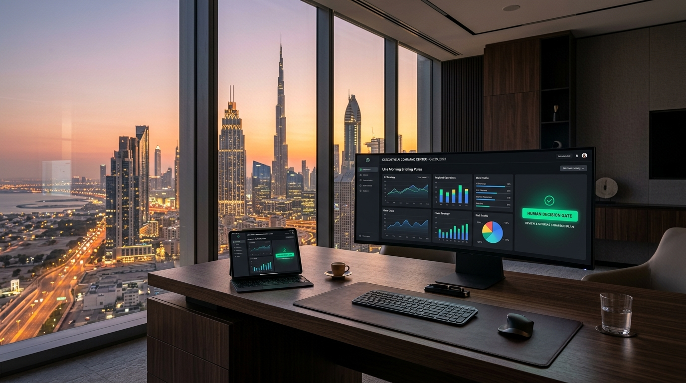

Turn Generative AI into Trusted Executive Habits — Zero Chaos.
Executives in fast-paced hubs like Dubai cannot waste 15 hours a week in status syncs, manual triage, and vendor noise. We deploy custom, low-friction AI workflows that recover 5–10 hours/week from Sprint 1, protected by a deterministic 1-Click Human Decision Gate.

C-Suite Operations Dashboard (Dubai Skyview)
60-Second Guided Walkthrough (Executive Narration)
• Instant Voice Transcription into executive bullet points.
• Pre-drafted High-Stakes Deliverables awaiting review.
• Deterministic Gate: The AI never contacts external clients without your explicit 1-click confirmation.
C-Suite AI Control Cockpit
Experience how the system handles high-velocity executive triage and protects corporate governance.
- 01. Revenue Milestone: Confirms $50,000 for Milestone 1 with approved commercial terms.
- 02. Calendar Alignment: Onboarding shifted to Thursday 10:00 AM GST (Delivery team notified & capacity reserved).
- 03. Time Sensitivity: Requires 1-click authorization prior to Apex 2:00 PM GST committee meeting.
How We Execute This in Your Organization
Friction Audit & Quick-Win Pilot
We map your highest-friction daily bottleneck (email overload, status digests, or task routing). Within 14 days, we deploy 1 safe pilot to recover your first 5–10 hours/week.
Department Workflow Automation
Expand proven workflows to key department leads (Sales, Operations, Client Delivery). Connect Slack, Notion, Google Workspace and CRM with deterministic Human Decision Gates.
Living SOPs & Team Autonomy
We document all workflows into living Playbooks and train your internal leads. Zero vendor lock-in: your team retains full ownership and mastery over the systems.
⚙️ Technical Architecture & Enterprise Governance (Inspect Secondary Layer) ▼
• Zero training on confidential client data (Enterprise API tier compliance).
• PII Sanitization layer active before any model inference.
• Immutable audit trail logged for every human gate interaction.
• Python / TypeScript execution layer.
• n8n / Make workflow orchestration & webhooks.
• Slack, Microsoft Teams, Notion, Supabase, Google Workspace integration.